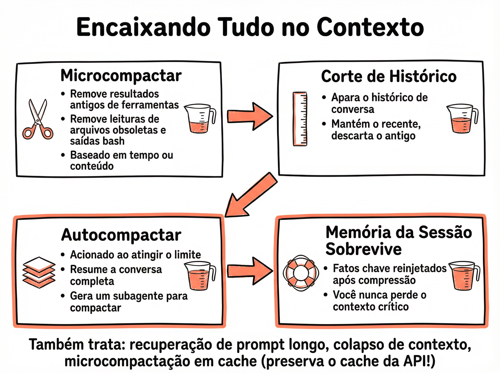

ê°Å¸â O Problema ê¢â¬â Janela finita vs sessêµes longas
Todo modelo de linguagem opera dentro de uma janela de contexto finita. O Claude Sonnet, por exemplo, aceita atê© 200K tokens de entrada. Parece muito ê¢â¬â atê© vocêª perceber que uma sessê£o de desenvolvimento real gera conteêºdo a uma velocidade assustadora: cada arquivo lido, cada comando executado, cada resposta gerada consome tokens. Em sessêµes longas, o contexto simplesmente estoura.

O Problema da Entropia Contextual
Janela finita: O modelo tem um limite rêÂgido de tokens que pode processar por vez (ex: 200K tokens de entrada)
Crescimento exponencial: Cada tool_use (leitura de arquivo, busca, comando) adiciona centenas ou milhares de tokens ao histê³rico
Entropia contextual: Quanto mais informaê§ê£o irrelevante acumulada, mais o modelo se confunde ê¢â¬â a qualidade das respostas degrada
Custo financeiro: Cada token processado custa dinheiro ê¢â¬â contexto inflado = conta mais alta sem benefêÂcio
ê¢Å¡Â ê¯Â¸Â O Que Acontece Sem Gerenciamento de Contexto
Alucinaê§ê£o por diluiê§ê£o: Informaê§êµes antigas e irrelevantes competem com as recentes ê¢â¬â o modelo comeê§a a "inventar" porque nê£o consegue distinguir o que importa
Erro de contexto: A sessê£o simplesmente falha quando atinge o limite ê¢â¬â sem aviso, sem recuperaê§ê£o
Custo desnecessê¡rio: Processar 200K tokens repetidamente quando 50K seriam suficientes multiplica a conta por 4x
ê°Å¸ââê¯Â¸Â Estê¡gio 1: Microcompactar ê¢â¬â Limpar saêÂdas antigas de ferramentas
O primeiro estê¡gio ê© o mais gentil e tambê©m o mais frequente. A ideia ê© simples: quando uma ferramenta foi usada hê¡ vê¡rias rodadas, o resultado detalhado dela nê£o ê© mais relevante. O fato de que a ferramenta foi chamada permanece no histê³rico ("leu o arquivo X"), mas a saêÂda completa (o conteêºdo inteiro do arquivo) ê© removida. Isso preserva a narrativa da conversa enquanto libera grandes blocos de tokens.
Como Funciona a Microcompactaê§ê£o
Alvo: Blocos tool_result de rodadas antigas ê¢â¬â outputs de Read, Bash, Grep, etc.
O que fica: O registro de que a ferramenta foi chamada e seus parê¢metros (ex: "leu /src/main.ts")
O que vai: O conteêºdo completo retornado pela ferramenta (ex: as 500 linhas do arquivo)
Quando: Automaticamente, para outputs de ferramentas que estê£o alê©m de um threshold de distê¢ncia da rodada atual
Impacto zero na narrativa: O modelo ainda sabe que leu o arquivo ê¢â¬â sê³ nê£o tem mais o conteêºdo bruto na memê³ria de trabalho
ê°Å¸â¡ Economia Real de Tokens
Um êºnico Read de arquivo grande pode consumir 5.000ê¢â¬â20.000 tokens. Se a sessê£o leu 10 arquivos nas primeiras rodadas, sê£o potencialmente 100K+ tokens que nê£o precisam mais estar no contexto. A microcompactaê§ê£o sozinha pode reduzir o contexto em 40ê¢â¬â60% sem perda de qualidade.
ê¢Åâê¯Â¸Â Estê¡gio 2: Corte de Histê³rico ê¢â¬â Aparar rodadas antigas
Quando a microcompactaê§ê£o nê£o ê© suficiente, o sistema passa para o segundo estê¡gio: cortar rodadas inteiras de conversa. As interaê§êµes mais recentes ficam intactas (sê£o as mais relevantes para o contexto atual), enquanto as mais antigas sê£o completamente removidas. êâ° uma poda temporal ê¢â¬â o que aconteceu hê¡ 30 rodadas provavelmente nê£o ê© mais relevante para o que estê¡ acontecendo agora.
Como Funciona o Corte de Histê³rico
PrincêÂpio: Rodadas recentes sê£o mais valiosas que antigas ê¢â¬â recêªncia como proxy de relevê¢ncia
Mecanismo: Remove pares completos de mensagem (user + assistant) das primeiras rodadas da conversa
Preservaê§ê£o: System prompt e mensagens recentes nunca sê£o cortados
Progressivo: Corta apenas o mêÂnimo necessê¡rio para voltar abaixo do threshold
ê°Å¸âÅ Como Decide o Que Cortar
Ordem cronolê³gica: Sempre comeê§a pelas rodadas mais antigas ê¢â¬â as mais distantes do momento presente
Threshold configurê¡vel: O sistema monitora a porcentagem de uso da janela e aciona o corte quando ultrapassa o limite definido
Granularidade: Rodadas inteiras sê£o a unidade ê¢â¬â nê£o corta no meio de uma interaê§ê£o
Idempotente: Pode ser aplicado mêºltiplas vezes sem efeitos colaterais ê¢â¬â cada aplicaê§ê£o corta mais rodadas antigas
ê°Å¸ââ Estê¡gio 3: Autocompactar ê¢â¬â Resumo inteligente do histê³rico
O estê¡gio mais sofisticado. Quando o contexto atinge um limite crêÂtico e os estê¡gios anteriores nê£o foram suficientes, o Claude Code aciona um subagente dedicado. Esse subagente recebe o histê³rico completo da conversa e produz um resumo compactado ê¢â¬â preservando decisêµes, fatos-chave e estado atual do trabalho, descartando detalhes intermediê¡rios. O resultado substitui todo o histê³rico anterior.
Como Funciona a Autocompactaê§ê£o
Trigger automê¡tico: Ativado quando o uso de contexto ultrapassa o threshold (tipicamente ~80% da janela)
Subagente dedicado: Uma instê¢ncia separada do Claude lêª todo o histê³rico e gera um resumo estruturado
O que preserva: Decisêµes tomadas, arquivos modificados, erros encontrados, estado atual da tarefa, preferêªncias do usuê¡rio
O que descarta: Tentativas intermediê¡rias, saêÂdas de debug, exploraê§êµes que nê£o levaram a nada
Substituiê§ê£o total: O resumo compactado substitui completamente o histê³rico anterior ê¢â¬â a conversa "recomeê§a" com contexto condensado
ê°Å¸â¡ Quando Usar /compact Manualmente
Vocêª nê£o precisa esperar o sistema acionar a autocompactaê§ê£o automaticamente. O comando /compact permite forê§ar uma compactaê§ê£o a qualquer momento ê¢â¬â e ê© estratê©gico fazer isso:
Ao mudar de tarefa: Terminou uma feature e vai comeê§ar outra? /compact limpa o ruêÂdo da tarefa anterior
Apê³s debug extenso: Sessêµes de debug geram muita saêÂda ê¢â¬â compactar preserva apenas a soluê§ê£o
Antes de tarefas complexas: Garanta contexto limpo antes de pedir algo que vai gerar muito output
ê°Å¸â¾ Estê¡gio 4: Memê³ria da Sessê£o ê¢â¬â Fatos-chave que sobrevivem ê compressê£o
A compressê£o, por mais inteligente que seja, sempre perde alguma informaê§ê£o. Para mitigar isso, o Claude Code mantê©m um sistema de memê³ria da sessê£o: fatos-chave sê£o marcados e reinjetados automaticamente apê³s qualquer compressê£o. Isso garante que o contexto crêÂtico ê¢â¬â como decisêµes arquiteturais, preferêªncias do usuê¡rio e estado do projeto ê¢â¬â nunca se perca, independentemente de quantas vezes o histê³rico foi compactado.
Memê³ria da Sessê£o: Persistêªncia Seletiva
CLAUDE.md: O arquivo de memê³ria principal ê¢â¬â sempre reinjetado no inêÂcio de cada conversa e apê³s cada compactaê§ê£o
Fatos extraêÂdos: Durante a autocompactaê§ê£o, o subagente identifica fatos-chave e os marca para persistêªncia
Hierarquia de memê³ria: Memê³ria global (~/.claude/CLAUDE.md) + memê³ria de projeto (./CLAUDE.md) + memê³ria da sessê£o atual
Reinjeê§ê£o automê¡tica: Apê³s compactaê§ê£o, fatos-chave sê£o adicionados ao inêÂcio do contexto compactado
ê°Å¸âÅ O Que Sobrevive ê Compressê£o
Sempre sobrevive: System prompt, CLAUDE.md, preferêªncias de usuê¡rio, configuraê§êµes de permissê£o
Sobrevive por importê¢ncia: Decisêµes arquiteturais, bugs encontrados, padrêµes do projeto, convenê§êµes de cê³digo
Descartado: Conteêºdo bruto de arquivos, saêÂdas de comandos, exploraê§êµes sem resultado, mensagens de debug
Resultado: Apê³s compactaê§ê£o, o contexto ê© menor mas mais denso em informaê§ê£o êºtil ê¢â¬â melhor relaê§ê£o sinal/ruêÂdo
ê°Å¸â° Microcompactaê§ê£o em Cache ê¢â¬â Comprimir sem desperdiê§ar cache
Uma variante especial e elegante do primeiro estê¡gio. A API do Claude suporta prompt caching ê¢â¬â um prefixo estê¡vel do prompt ê© armazenado em cache e reutilizado entre chamadas, reduzindo custo e latêªncia. O problema: se vocêª remove ou modifica qualquer parte do prefixo cacheado, o cache inteiro ê© invalidado. A microcompactaê§ê£o em cache resolve isso usando a API de cache editing para remover outputs de ferramentas sem quebrar o prefixo em cache.
Cache-Aware Microcompaction
Prompt caching: A API armazena um prefixo estê¡vel do prompt ê¢â¬â chamadas subsequentes reutilizam esse cache, pagando ~90% menos por esses tokens
O dilema: Microcompactaê§ê£o normal modifica o histê³rico ê¢â â quebra o cache ê¢â â prê³xima chamada paga preê§o cheio por todos os tokens
A soluê§ê£o: Cache editing API permite remover blocos especêÂficos de tool_result sem invalidar o prefixo cacheado
Resultado: Compressê£o de contexto + preservaê§ê£o de cache = economia dupla (menos tokens E tokens mais baratos)
ê°Å¸â¡ Impacto no Custo
O prompt caching da API do Claude oferece desconto de ~90% em tokens cacheados. Se o prefixo tem 100K tokens e vocêª quebra o cache, a prê³xima chamada paga preê§o cheio por todos eles. A microcompactaê§ê£o cache-aware evita essa armadilha ê¢â¬â vocêª continua comprimindo o contexto, mas o cache permanece vê¡lido. Em sessêµes longas com muitas chamadas, isso pode representar uma economia de 50ê¢â¬â70% no custo total da sessê£o.
Fazer
- ✓ Usar /compact proativamente ao mudar de tarefa
- ✓ Manter CLAUDE.md atualizado com fatos-chave do projeto
- ✓ Confiar no pipeline automê¡tico para sessêµes normais
- ✓ Iniciar novas sessêµes para tarefas completamente diferentes
Evitar
- ✗ Sessêµes infinitas sem compactaê§ê£o ê¢â¬â o contexto vai degradar
- ✗ Colar arquivos inteiros no prompt quando Read funciona
- ✗ Ignorar sinais de degradaê§ê£o de qualidade nas respostas
- ✗ Repetir informaê§êµes que jê¡ estê£o no CLAUDE.md
ê°Å¸ââ¹ Resumo do Mê³dulo
Prê³ximo Mê³dulo:
2.4 - ê°Å¸Â§Â Nunca Esquece: O Sistema de Memê³ria Persistente